Content
Welcome!
Media and Web Development
Week 3 - Introduction to CSS
Agenda
- What is CSS?
- Selectors
- Color
- Font
- Layout
CSS is a style sheet language used for describing the presentation of a document written in a markup language like HTML.
wikipediaCSS makes the web look like it does!
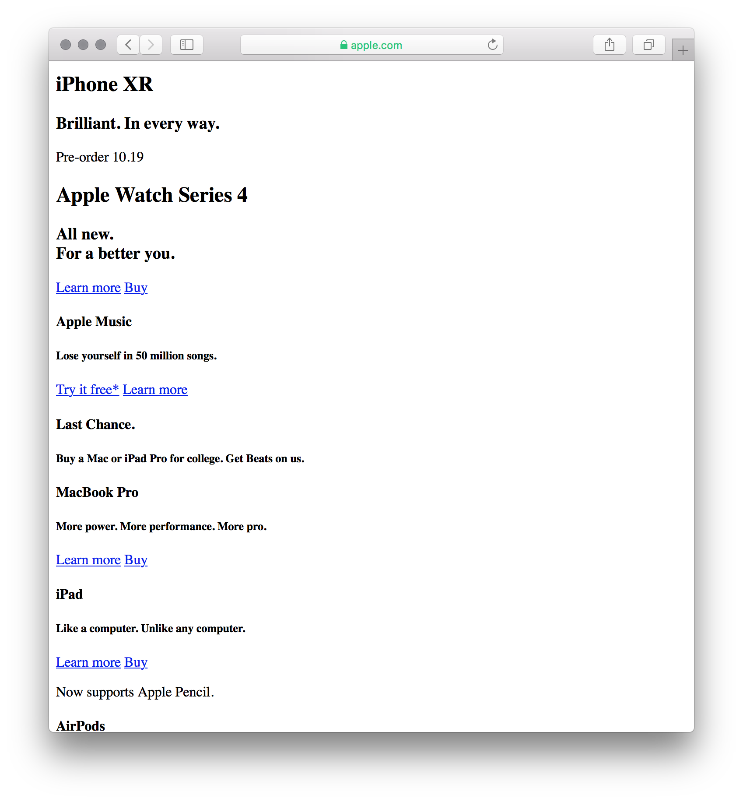
Cascading Style Sheets
Cascading because styles flow over many elements.

When many styles are applied to the same element, they use a cascading priotiry scheme.
CSS Rules
The 2000 key/value pairs that make websites look nice.
A css rules are key/value pairs (like HTML attributes).
color: red;
font-size: 24px;
padding-left: 8px;
text-align: center;
A rule starts with the key, followed be a colon, then the value, ended with a semi-colon.
color: red;
There are thousands of css rules.
We'll learn some together as we go, you'll learn some on your own as you research specific functionality, and the rest you can find on w3schools css reference.
CSS Selectors
Selectors allow us to choose which elements our css rules are applied to.
We can select by tag name.
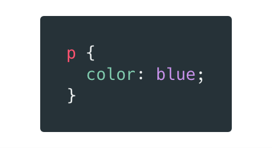Apply the color: blue rule to all p tags
We can select child tags based on their parents.
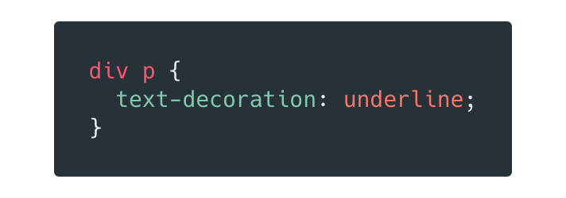Apply an underline style to all p tags that are children of a div tag.
This is a general descendent selector.
In addition to general descendent selector, we can select direct descendents, or siblings.
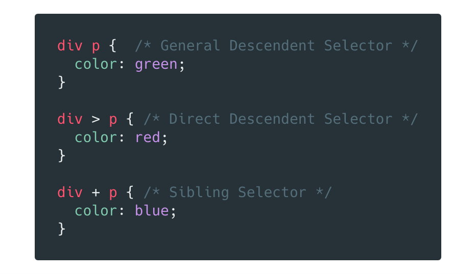We can select arbitrary elements with id and class attributes.
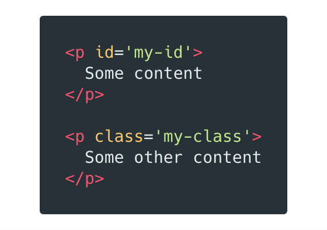Classes and IDs are html attributes, just like href and src from last week.
Each element may only have one ID, and an ID can only be applied to one element.
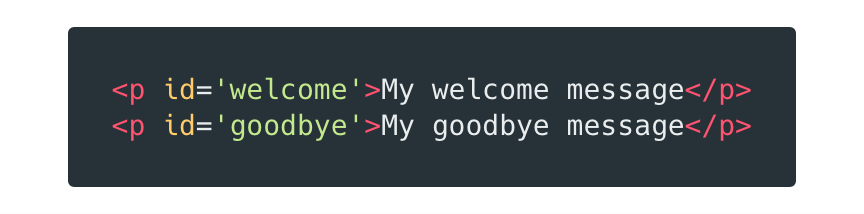Classes can be applied to multiple elements, and an element may have many classes.
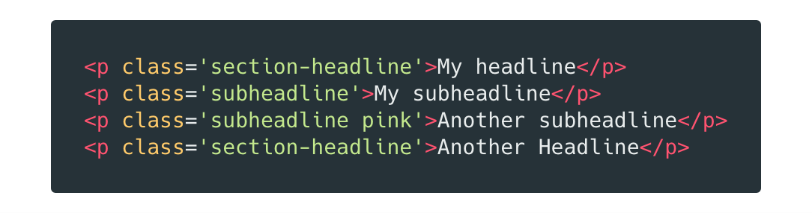Class and ID names can mostly be whatever you want, but must always start with an a-z character.
We can select by class in our css with a dot (.) followed by the class name.
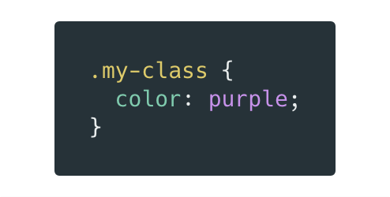And we can select by id with the hash symbol (#) followed by the id name.
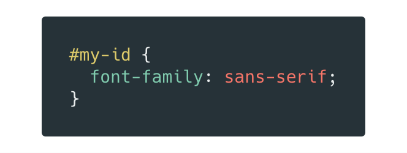Classes and IDs are confusing at first. This article on css tricks gives a good overview of the difference between the two.
Web Colors!
The easiest way to define colors is using one of the 140 named colors supported by modern browsers.
We can also define colors with the rgba function. Values between 0 and 255 for Red/Green/Blue, and 0.0 to 1.0 for alpha (opacity).
Most commonly, colors are defined with hex codes. This is similar to the RGB notation, but instead of decimal 0 - 255, we use hexadecimal 0 - FF.
At then end of the day, the browser doesn't care which of these color formats you use. You should have familiarity with all them, but use whatever you feel most comfortable with.
Web Fonts
Fonts on the web can be quite complicated.
We'll look at some of the most common approches, type nerds might want to look at this article to get into the nitty gritty.
The font-family property and generic fonts.
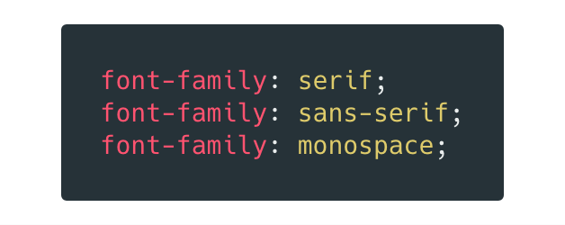The font-family css property can be used to set the font used when rendering text. When you pass a font name to font-family that font will be looked up on the users computer.
The browser provides 3 generic fonts serif/sans-serif/monospace to use as fallbacks when the desired font isn't available.
For lists of commonly installed fonts and font stacks see w3schools websafe fonts and cssfontstack.com
Google Fonts
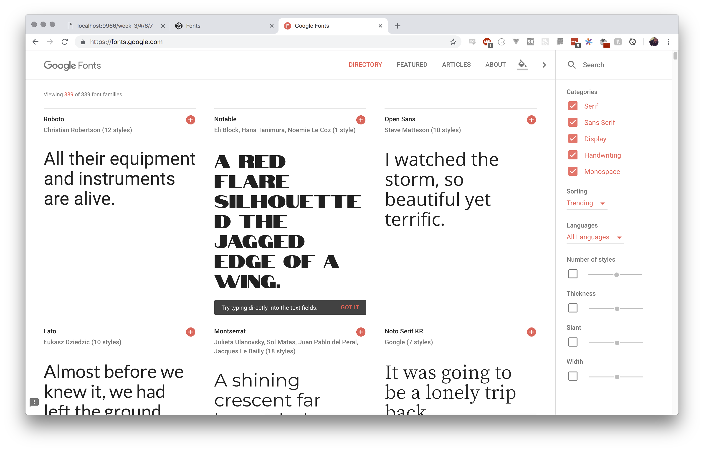Whenever I start a project and want to think about typography google fonts is the first place I go.
In codepen, we need to use the @import syntax to import fonts directly in our css.
Once the font is imported, we can use it with the font-family rule as before.
Font Size and units
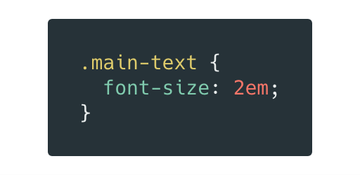The font-size property lets us set the size of our rendered text.
You can declare the size in px, em, or vw.
Pixels is a exact unit, setting a font-size in pixels guarentees it will be the same size for all users.
Em is similar to pixels, but accounts for the users global font-size setting. By default, 1em = 16px.
Vw stands for viewport width. You can use this unit to make text resize with the browser window. This is useful for large hero text.
You can read about more css font rules at w3schools CSS Fonts page
Layout / CSS Box Model
Every element on a webpage lives in its own little box.
At the center of the box is the elements content.
That box has a border that we can style however we like.
Content
The distance between the content and the border is known as the padding.
Content
Content
Content
The distance between the a box and its neighbor is known as its margin.
Content
Content
Content